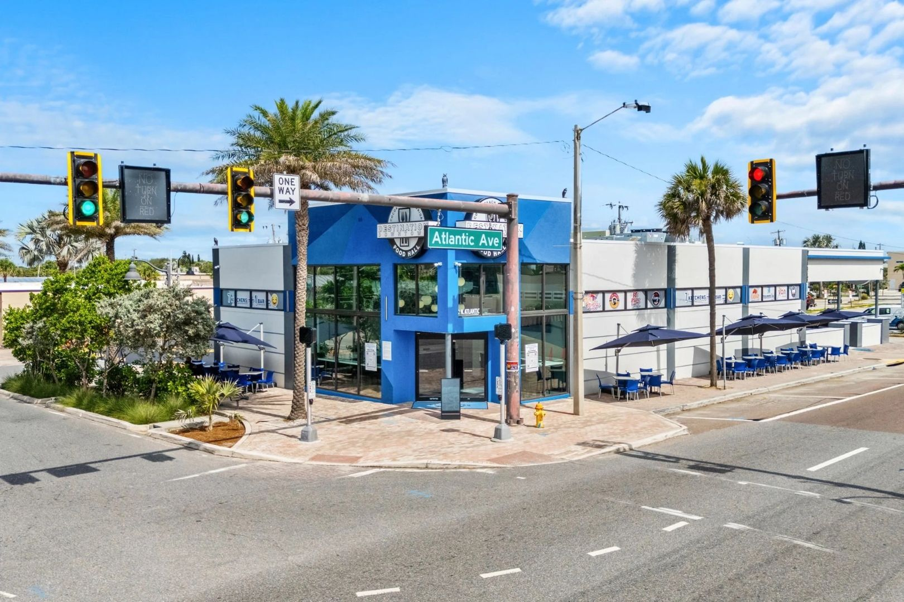

When a facility manager calls ACG and says "my windows are fogging up," there are three completely different problems they might be describing - and the correct response is different for each one. Only one of them actually requires replacing the glass. The other two are either an HVAC issue or a non-issue that's actually a sign the glass is performing correctly. Misdiagnosing fogging leads to expensive unnecessary work or, worse, ignoring a real seal failure until it spreads across the building. This is the diagnostic framework ACG uses on commercial fogging calls across Florida - what you're seeing, what's causing it, and what the fix actually looks like.

Three Kinds of Fogging - And Only One Is a Glass Problem
Before ordering replacement glass, diagnose which kind of fogging you're actually seeing. The fix for each is completely different.
Type 1: Interior Condensation on the Room-Side Surface
Fog or water droplets on the indoor face of the glass mean warm, humid indoor air is contacting cold glass. This is a humidity management problem, not a glass problem. It shows up most often in:
- Restaurant kitchens and dish rooms where RH runs over 70 percent
- Natatoriums and pool rooms
- Food processing spaces
- Office buildings where HVAC is overcooling and under-dehumidifying
The fix is HVAC, not glass. Replacing the glass won't help if the interior dew point is above the glass surface temperature. The solution is mechanical - either lowering indoor RH or warming the interior glass surface with perimeter supply airflow.
Type 2: Exterior Condensation on the Outdoor-Facing Surface
Dew or fog on the outside face of the glass at dawn. This is radiative cooling - the glass surface has cooled overnight below the outdoor dew point, and water vapor condenses on it. Counter-intuitively, this is a sign that the glass is performing well. A high-performance low-E IGU with good U-factor keeps the exterior glass surface cold overnight because it isn't leaking heat from the interior. Budget buildings with poor U-factor don't get exterior condensation because they're warming their own exterior surfaces with interior heat loss. If your glass is doing this occasionally on humid mornings, it's not a defect.
Type 3: Fogging Between the Panes
Moisture or residue visible inside the IGU cavity, between the two lites, that cannot be cleaned from either side. This is IGU seal failure. The primary and secondary seals at the IGU perimeter have broken down, outdoor moisture has migrated into the cavity, and condensation is forming inside the unit. This is a glass replacement issue - specifically an IGU replacement, not a whole window replacement.
Why IGU Seals Fail (Especially in Florida)
A dual-seal IGU has a primary seal (polyisobutylene, PIB) that's the moisture barrier and a secondary seal (silicone, polysulfide, or polyurethane) that's the structural bond. The primary seal is microns thick. Three forces break it down over time.
Moisture Loading
Florida's year-round 73 to 78 percent relative humidity constantly pushes water vapor toward the IGU cavity, which is at lower humidity because of the desiccant. The primary seal holds back that pressure gradient - but over 15 to 20 years the PIB loses plasticizer and gets brittle. Once a micro-crack forms, moisture ingress accelerates rapidly.
Thermal Cycling
Every day the IGU cavity heats and cools, pressurizing and depressurizing. That expansion-contraction cycle flexes the perimeter seal tens of thousands of times over a 20-year service life. Eventually something gives.
UV Exposure at the Edge
The primary seal sits just inside the spacer bar and gets hit by UV bouncing off the glass edge. UV breaks down the PIB over decades. Spacer designs with UV-blocking edge tape extend seal life significantly, which is why they're standard on ESWindows GW-7000 curtainwall units.
Why Pre-Glazed Units Fog Later
An IGU glazed into its frame at the ESWindows factory is sealed under controlled humidity - typically 25 to 40 percent RH in the glazing area. An IGU field-glazed into a storefront on a Florida jobsite during summer might be sealed under 85 percent ambient RH. That humidity gets trapped in the glazing pocket and slowly works on the IGU perimeter seal from the outside. On ACG's active book, IGUs installed pre-glazed versus stick-built field-glazed show a measurable service life difference - the factory-glazed units routinely outlast field-glazed units by 3 to 5 years before visible fogging. That's why ESWindows pre-glazed storefront is our default spec on commercial work.
How to Diagnose Fogging Correctly
Diagnosing fogging takes about 2 minutes of observation.
- Wipe the interior surface with a dry cloth. If the fog clears, it's Type 1 (interior condensation). Fix the HVAC.
- Wipe the exterior surface. If the fog clears, it's Type 2 (dew). No action required.
- If you can't reach either surface and the fog persists through a sunny day, it's Type 3 (IGU seal failure). The moisture is inside the sealed cavity.
Type 3 fogging is often intermittent in the early failure stages - visible on cool mornings, cleared by midday sun. As the failure progresses, the fogging persists through the day, and eventually mineral deposits and desiccant residue become visible in a cloudy haze on the glass interior. Once desiccant residue is visible, the IGU is fully compromised.
Repair vs Replace: Almost Always IGU Swap
When Type 3 fogging is confirmed, the fix is an IGU replacement - remove the failed IGU, install a new one into the existing frame. You don't replace the whole window. The frame, hardware, and structural elements are still good. Only the glass unit needs to come out.
IGU replacement typical cost in Florida commercial (2026):
Lead time for replacement IGU is typically 6 to 10 weeks from order because the unit has to be built to match the exact original spec - glass thickness, cavity depth, low-E type, laminate makeup, dimensions. Trying to shortcut the match leads to framing incompatibility and repeat failures.
When to Consider a Building-Wide Campaign
If 10 to 15 percent of IGUs on a building are showing fogging, you're usually at year 15 to 18 of service life and the remaining 85 to 90 percent are close behind. Replacing failed units one by one works for a few years but eventually you're sending a glazier to the building every quarter. At that point, a planned building-wide IGU replacement campaign is typically more cost-efficient per unit than continued one-off replacements.
Campaign pricing benefits:
- Single mobilization and lift setup across the full scope
- Volume pricing on IGU manufacturing
- Reduced per-unit shop drawing and submittal cost
- Coordinated tenant notification cycle
- Single warranty start date on all new units
On projects like Wave Food Hall Cocoa Beach, we've done this kind of campaign where the owner was facing rolling IGU replacements for years to come. Consolidating into a planned scope made the numbers better and ended the chronic replacement cycle.
How ACG Assesses Fogging
An ACG fogging assessment on an existing commercial building includes (1) count and map of affected IGUs, (2) sampling of non-failed IGUs for seal age indicators, (3) match verification of the existing glass spec, (4) pricing for one-off vs campaign replacement, and (5) warranty reset on new units.
If you're seeing fogging in a commercial building in West Palm Beach, Tampa, or anywhere in Florida, send photos and address via contact.html. We'll tell you which type of fogging it is and what the real fix looks like.
Ready to get started?
ACG is a CGC-licensed Florida commercial glazing subcontractor (CGC1531993) headquartered in West Palm Beach. We price commercial Division 08 scopes across the state and return budget pricing within 48 hours. Send your plans and we'll have a scope back to you fast.